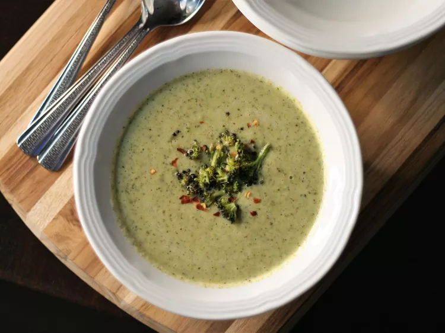

Roasted Broccoli Soup

Description
Blend roasted broccoli, cream cheese, and vegetable broth to make a simple, yet delicious soup. Roasting broccoli enhances its flavor, allowing nutty and sweet flavors to develop.
Ingredients
- 5 cups chopped broccoli florets and stalks
- 1 onion, chopped into 1-inch pieces
- 3 cloves garlic, peeled
- 2 tablespoons olive oil
- 3 cups vegetable broth
- 4 ounces cream cheese, softened
- ¾ teaspoon lemon pepper, or more as needed
- crushed red pepper flakes to taste
Steps
- Preheat the oven to 400 degrees F (200 degrees C). Line a baking sheet with parchment paper.
- Place broccoli, onion, garlic, and olive oil in a large bowl and toss to coat evenly. Place on the prepared baking sheet in a single layer.
- Roast vegetables until soft, 30 to 35 minutes, stirring every 10 minutes. Remove from oven. Chop 1/4 cup of broccoli florets; set aside for garnish.
- Combine remaining vegetables with vegetable broth, cream cheese, and lemon pepper in a high-powered blender or food processor in batches. Puree soup until smooth.
- Pour soup into a saucepan over medium-low heat until warmed through, about 5 minutes. Season with additional lemon pepper to taste. Ladle into bowls. Garnish with reserved chopped broccoli and crushed red pepper.
Nutrition Facts
- 196 calories
- 17g fat
- 8g carbs
- 3g protein
Back to homepage